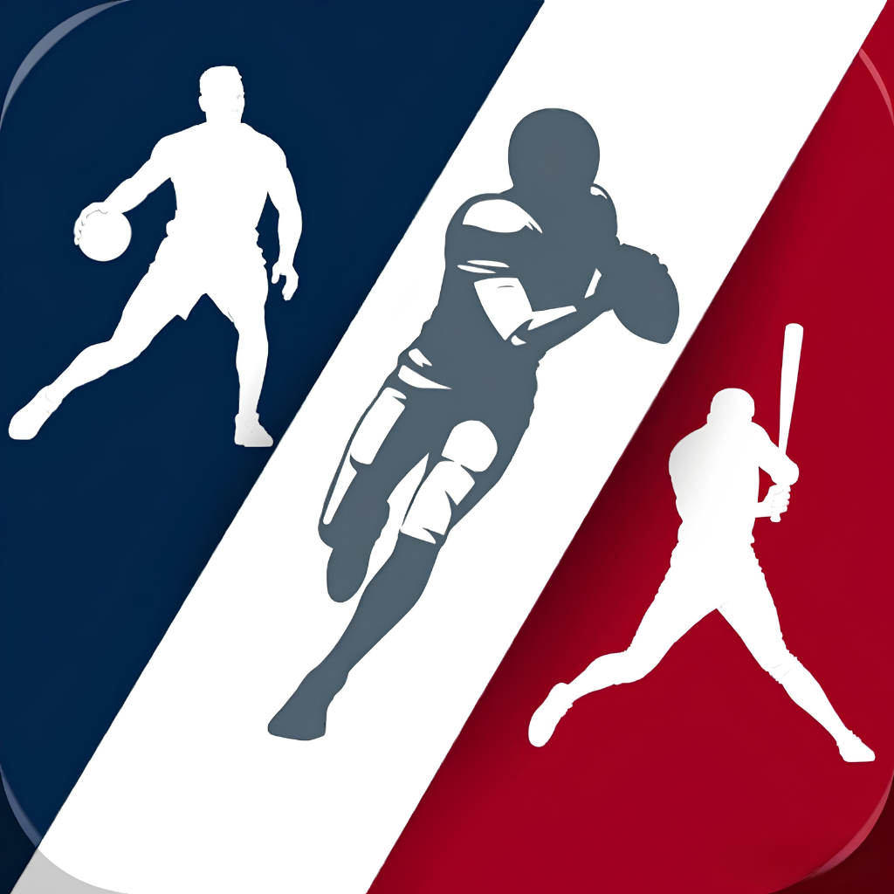

USA Sports AI
Test build 175 (v2.1) · design FOOT AI · IA indépendante des cotes · sans essai gratuit.
📲 Install / Update (iPhone)
🤖 Android APK 2.1.0 (vc39)
À TESTER (build 175 / vc39 — ratissage final)
0. Bilan IA = la saison (« 20 bons pronos sur 36 · saison 2026-27 ») et, dans Résultats, Historique de la saison : semaine par semaine avec le %, touche une semaine → tous les matchs ✓/✗ avec la confiance.
1. Onglet Matchs : carte journée + compte à rebours, bilan IA gros anneau, cartes de match verre avec prono + confiance + puce « avec / contre les bookmakers ».
2. Cartes verrouillées : prono flouté + bouton or → nouvelle page d'abonnement « Vitrine » (sans essai, 9,99 $ / 59,99 $).
3. Page d'analyse : bandeau « L'IA face aux bookmakers » au-dessus des cotes ; plus de cote sous le verdict.
4. Réglages en clair.
Le robot ne voit plus les cotes : les pronos d'aujourd'hui sont déjà régénérés.
build 171 · design FOOT AI, IA sans les cotes, paywall sans essai.
build 170 · animation fluide · classements & analyse « stade de nuit » · agencement petit écran.
build 167 · Réglages comme FOOT AI, fenêtre « AI PICK INCOMING », fenêtre légale en carte blanche.
build 164 · Résultats et Classement comme FOOT AI.
build 162 · page d'analyse « la balance ».
build 155 · design FOOT AI : radar, bandeaux, cartes stats / forme / H2H / lanceurs / cotes, verdict IA.
In Safari: pull down to refresh this page first, then tap Install.
If asked: Settings → General → VPN & Device Management → trust the developer.
🔒 Locked to your device only.